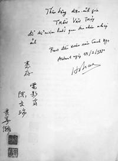
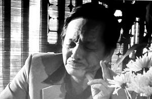
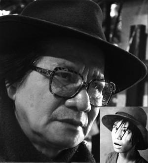

“ Tôi yêu tiếng nước tôi
Từ khi mới ra đời
Người ơi...
Mẹ hiền ru những câu xa vời. À ơi ...”
☆
Cách đây hai tháng, khi trao đổi đôi điều về nhạc sĩ Phạm Duy trong một bộ phim tài liệu do đạo diễn Đinh Anh Dũng thực hiện, hãng phim Phương Nam sản xuất, tôi đã nhắc lại câu ca này.
Lời ca đi vào tâm hồn bao thế hệ người Việt vào những năm giữa thế kỷ trước, nó đọng lại trong tôi như một hành trang trong suốt cuộc đời, nhất là lúc trưởng thành, lúc làm phim, khi chọn đề tài, khi đối diện với những gian nan...
Tôi không hiểu đạo diễn Đinh Anh Dũng sử dụng những đoạn quay ấy như thế nào, cắt bỏ như thế nào nhưng tôi đã nói lời gan ruột của tôi về chủ đề yêu nước, một chủ đề xưa như trái đất và cũng mới đến mức không thể có gì mới hơn.
Tôi nói rằng yêu nước là thuộc tính của loài người, nhất là người Việt Nam ta.
Tôi cũng đã nghĩ và nói rằng: Ở xứ này, phải đốt đuốc mới may ra tìm được dăm ba người không yêu nước; tất nhiên không kể bọn quan tham và người mắc bệnh tâm thần. Có điều, người ta bày tỏ lòng yêu nước theo cái cách của người ta. Và theo tôi, không ai có độc quyền yêu nước, không ai có độc quyền ban phát lòng yêu nước và dạy bảo người khác cách thức yêu nước.
Chúng ta có thể không có bình đẳng về chức tước, phẩm hàm, tiền bạc, quyền lực nhưng trời cho chúng ta, tổ tiên cho chúng ta bình đẳng về lòng yêu nước. Điều này thực ra cũ như trái đất và tôi cũng đã nói nhiều trên báo qua những bài phỏng vấn.
Hãy đọc bức thư của học giả Nguyễn Văn Vĩnh gửi cụ Huỳnh Thúc Kháng năm 1924:
“...Cái hố sâu ngăn cách giữa một nhà nho chân chính như ông, người không còn tin vào những tư tưởng lẫn những phương pháp của quá khứ với tôi, một người man di hiện đại, sản phẩm của một nền giáo dục hỗn tạp và đầy khiếm khuyết, kẻ đang cố tìm một vài chân lý trong cùng cái quá khứ đó, mà tôi, tất nhiên cũng không biết gì hơn ông Kháng. Cái quá khứ đó dù sao cũng hiện lên đối với tôi như một nguồn sức sống và ánh sáng chưa được biết tới.
Chúng ta đã gặp nhau trên con đường và người nào cũng cho rằng mình đi đúng hướng, chính bởi con đường đó chưa có. Giống như, rốt cùng, cả hai chúng ta đều đang đi tìm chân lí thì không nhất thiết cứ phải đi theo cùng một hướng...”
(Theo tài liệu “Sự ra đời của chữ quốc ngữ và Người man di hiện đại” của sử gia người Mỹ Christophe E. Gocha)
☆
Tuyệt vời phải không? Người xưa làm chúng ta day dứt và bái phục!
Khi tôi làm nghề, những chuyện dông dài, dính dáng đến lòng yêu nước như vậy nhiều không kể xiết, viết ra có người không ưa, cho rằng mô phạm hay cao đạo. Họ cắt xén đi vì sợ phạm húy.
Có điều thật lạ là khi nói đến hai chữ “yêu nước” của người Việt Nam ta, có lúc thấy nó giản dị, nhưng có lúc thấy nó cao sang. Cao sang đến nỗi chẳng mấy ai dám tự nhận trước đám đông rằng: Tôi là người yêu nước!
Yêu nước trở thành một đẳng cấp!
Người Việt Nam mình cũng lạ lùng thật!
Bây giờ cho tôi liều lĩnh nói một lời: “ Tôi yêu nước! ”.
Tất cả những bộ phim tôi làm, những điều tôi viết, con đường độc đạo tôi đi, những cam go cuộc đời tôi chịu vì tôi... yêu nước. Đừng mất công tìm kiếm thế lực nào đó đứng sau lưng tôi. Tôi chẳng giỏi giang đến vậy, cũng chẳng ngu xuẩn đến thế.
Cứ thấy ai khác ta, nghĩ không giống điều ta nghĩ, muốn không giống điều ta muốn đều vu là kẻ thù. Anh ăn ở với đời ra sao, ân oán ra sao mà sinh ra lắm kẻ thù vậy?
Một người có quá nhiều kẻ thù như vậy thì đâu có hay ho gì!
Phải không ạ?
☆
Nhiều năm trời mấy người bên an ninh canh gác nhà tôi, bắt giữ tôi, thẩm vấn nhiều lần chỉ vì nghi ngờ rằng sau lưng tôi có một lực lượng chính trị nào xúi bẩy, có ai đứng sau lưng tôi (tôi còn ghi chép đầy đủ, ai thẩm vấn, bao nhiêu lần, ngày nào, ở đâu, qua đêm nào, nội dung ra sao...).
Họ dò la các quan hệ của tôi, lục soát sổ danh bạ điện thoại của tôi để thẩm vấn tôi một cách kĩ lưỡng. Họ hỏi tôi về quan hệ của tôi với các trí thức người Việt trong và ngoài nước, thậm chí căn vặn tôi về quan hệ của tôi với ông Trần Độ - đến nước này thì tôi thấy lạ lùng quá. Họ còn hỏi tôi về việc ông Blanche Maison trước khi sang Việt Nam làm đại sứ đã mời tôi đến chuyện trò ở Bộ Ngoại giao Pháp. Họ hỏi tôi tại sao lại có một tổ chức là Nhóm Bạn Trần Văn Thủy ở Paris... Tất nhiên toàn những câu hỏi vớ vẩn, nhưng chuyện nào tôi cũng trả lời rõ ràng minh bạch và lễ độ. Tôi nhận thấy cách nói năng của họ cũng có phần lịch sự và tỏ ra tôn trọng tôi. Tuy nhiên người có tên là Bảy thẩm vấn tôi có lúc không tự chủ được đã nổi cáu, chỉ vào mặt tôi:
- Mày là thằng phản động! Mày liên lạc với bọn phá hoại, chuyển tài liệu ra nước ngoài và chuyển tài liệu từ nước ngoài về!
Tôi phanh ngực áo, giọng không còn điềm đạm được nữa:
- Bắn đi! Biết rõ thế thì bắn đi việc gì phải hỏi nhiều!
Là sĩ quan công an mà anh ta không hiểu một điều sơ đẳng về luật pháp rằng chỉ có chủ tọa phiên tòa mới có quyền kết luận bị cáo có tội gì khi kết thúc phiên tòa.
Việc đó xảy ra vào cuối giờ chiều ngày 20-4-1991 tại một địa điểm mà sau đó tôi được biết rằng xưa là Tổng Nha Cảnh sát Sài Gòn. Vừa đúng hết giờ làm việc, một chiếc xe con đỗ xịch trước cửa, họ bảo tôi lên xe, trên xe ngoài người lái xe, có một cảnh vệ còn rất trẻ, quãng tuổi con tôi đi áp giải, một chiếc chăn dành cho phạm nhân. Xe đi một hồi thì đến Trại Thủ Đức, ngoài có tường cao và rào kẽm gai bao bọc.
Tôi phải qua đêm ở đó.
Người cảnh vệ trẻ nằm giường bên cạnh. Tôi rất mệt nhưng không tài nào chợp mắt được, trong đầu cứ vang lên những tiếng ùng oàng trên chiến trường ngày nào...
Hôm sau lại hỏi, lại trả lời với nội dung tương tự. Những người thẩm vấn tôi ngoài Bảy còn thêm Đồng, Phong. Những buổi thẩm vấn như thế đều có máy ghi âm chuyên dụng ở phòng bên ghi lại.
Tối mịt, có một vị lãnh đạo Bộ Công an, nghe nói tên là Thành hay Thanh gì đó. Ông này mặc đồ trắng lịch sự, dáng vẻ sang trọng. Ông đến để gặp tôi trước khi tôi được thả ra. Ông điềm đạm nói với tôi dăm câu ba điều gì đó đến nay tôi không còn nhớ. Tôi thấy Bảy có vẻ lăng xăng đon đả với vị này, anh ta thanh minh với cấp trên của mình rằng tôi vô can. Anh ta còn tươi cười tạm biệt tôi!
Vậy mà ra Hà Nội mấy ngày sau đó tôi lại phải trình diện tại A15 Bộ Công an (cục phản gián đối ngoại?) để tiếp tục thẩm vấn những vấn đề trời ơi đất hỡi khác nữa. Đó là các ngày 1-5, 11-5, 13-5 năm 1991 do các công an viên Trần, Hạnh, Mậu, Long tiến hành.
☆
Chừng 10 năm sau cuộc gặp đáng nhớ với Thủ tướng Phạm Văn Đồng về vụ “Hà Nội Trong Mắt Ai”, tôi vẫn gặp nhiều phiền phức với cơ quan an ninh.
Vào một buổi chiều năm 1992, một ông khách lạ đến nhà tôi. Ông tự giới thiệu là Nguyễn Tiến Năng, thư ký của Thủ tướng Phạm Văn Đồng. Ông báo cho tôi: Thủ tướng gọi tôi đến có việc. Tôi cũng rất ngỡ ngàng vì làm sao Thủ tướng còn nhớ đến tôi và không hiểu cho gọi tôi vì việc gì.
Theo hẹn tôi lên. Thủ tướng yếu hơn xưa, mắt đã kém. Ông tiếp tôi một mình trong một phòng khách rộng. Ông hỏi han tôi về công việc, về gia cảnh...
Tôi thưa rằng nhờ trời mọi việc vẫn bình thường.
Ông vào đề, nói rằng:
- Bình thường thế nào? Tôi vừa nhận được thư của học giả Hoàng Xuân Hãn ở Pháp gửi về, than phiền về việc ở nhà đối xử với Trần Văn Thủy không được tử tế cho lắm và lưu ý tôi xem xét.
Tôi thưa: Nói chung là bình thường trừ hai việc. Một là cơ quan an ninh yêu cầu trình diện và thẩm vấn tôi quá nhiều; hai là Bộ Văn hóa không cho tôi xuất ngoại, mặc dù có tới gần chục lời mời từ Pháp và đặc biệt là từ Nhật Bản, những chuyến đi thuần túy vì công việc nghề nghiệp...
☆

Lời đề tặng của học giả Hoàng Xuân Hãn
Thủ tướng tỏ ra ưu tư, ông nói rằng:
- Bây giờ tôi chẳng còn quyền chức gì nữa, tôi sẽ xem xét ai phụ trách việc này và nhắc nhở họ. Nếu thân thì nói được....
“Nếu thân thì nói được”. Câu nói của Thủ tướng làm tôi rất buồn, một nỗi buồn vu vơ khó nói thành lời...
Học giả Hoàng Xuân Hãn và Thủ tướng thân nhau từ lâu. Tình cờ tôi hân hạnh nhận được sự quan tâm của cả hai nhân vật có nhân cách lớn, có những đóng góp tâm huyết cho đất nước.
☆
Một chuyện khác nữa:
Năm 1992, phu nhân Tổng thống Pháp François Mitterrand sang thăm Việt Nam với tư cách Chủ tịch Quỹ Danielle Mitterrand. Trước khi bà tới Hà Nội, đại sứ Pháp có gửi cho tôi giấy mời tới gặp bà. Nghe nói có một cuộc gặp mặt giữa bà và một số trí thức, trí ngủ Hà Nội gì đó. Tôi không rõ bà có ý định gì, mục đích gì trong cuộc gặp này nhưng vì xã giao tôi cũng đã có lời cảm ơn và định bụng sẽ tới nếu không có gì phiền hà.
Nhưng đúng ngày hẹn, có hai người tự xưng là công an bỗng dưng đến nhà tôi (hồi tôi còn ở 52 Hàng Bún). Họ nói với tôi rằng tôi không nên đến cuộc gặp đó. Tôi hỏi “không nên” hay “không được”? Họ bảo “không được”. Tôi hỏi tại sao. Họ bảo đây là lệnh của trên.
Một câu trả lời dễ dàng, dùng ở đâu, bao giờ, với ai cũng được.
Tôi thấy thật kỳ cục, nếu không tới được thì phải có lời với họ trước. Tôi có đến thì tôi mất thì giờ lại đóng bộ complet cravat, lại một bó hoa xã giao. Sung sướng gì đâu. Hai người nọ ngồi lì ở nhà tôi, không cho tôi ra khỏi nhà, cho đến khi họ alô kiểm tra, xem chừng cuộc họp kia kết thúc rồi họ mới rời khỏi nhà tôi. Sau tôi nghe nói lại rằng trong cuộc gặp đó người ta nói với bà Danielle Mitterrand rằng tôi đi công tác xa, không có mặt ở Hà Nội. Cuội thật. Tội nghiệp cho họ, ngay sáng hôm sau ông thư ký của bà Danielle Mitterrand, một người nói tiếng Việt như người bản xứ, đường đột đến nhà thăm tôi, hỏi sự tình, hỏi rất kỹ rằng vì sao tôi không có mặt, ông tự tay ghi vào cuốn sổ của tôi địa chỉ, số điện thoại của ông, một ở nhà riêng, một ở Văn phòng tại Paris. Tên ông ta là: Joel Luguern. Nghe nói ông là cha đỡ đầu của diễn viên Tôn Nữ Yên Khê, vợ đạo diễn nổi tiếng Trần Anh Hùng.
Hơn 20 năm qua rồi mấy người bên an ninh rình rập tra hỏi tôi ngày xưa chắc cũng đã về hưu cả rồi, già cả rồi. Ngẫm lại mỗi người chọn một nghề, tôi có nghề của tôi, họ có nghề của họ, bây giờ mà gặp lại nhau, uống với nhau ly rượu, tán gẫu sự đời thì chắc cũng nhiều chuyện vui để nói.
Lại nghĩ, biết bao tiền thuế của dân, biết bao thời gian và sức lực tuổi trẻ đổ vào những việc theo dõi điều tra “phá án” những vụ như thế này! Rõ khổ.
Nhưng bây giờ nghĩ lại, công bằng mà nói, tôi phải cảm ơn những người công an ấy, bởi vì ngày ấy họ chỉ quá tay một tí thì có khi tôi toi rồi, còn đâu mà hàn huyên dông dài như thế này nữa. Chưa nói trong số những người công an có quyền thẩm định, bàn bạc cái việc bắt hay chưa bắt tôi, có những người đã bênh vực tôi. Điều đó gần đây tôi mới được biết thêm.
☆
Rồi tình cờ, mấy tháng trước, sau 30 năm, tôi gặp lại tướng công an Phạm Chuyên. Theo sự rủ rê của bạn bè, anh đến chỗ dựng phim, xem phim “Vọng Khúc Ngàn Năm” tập III chúng tôi đang làm.
Có thể nói Phạm Chuyên có thiện cảm với tôi, nếu không nói là quí mến. Chúng tôi chuyện trò, đi chơi, đến nhà thăm nhau, uống bia, tào lao... Chúng tôi thường gọi Phạm Chuyên là ông “Chánh Sở Cẩm” . Anh sống thoáng đạt, ga lăng, ấn tượng nhất với tôi là anh có tình riêng và quí trọng tướng Nguyễn Cao Kỳ. Anh cũng đã bênh vực một số nghệ sĩ trí thức lúc sa cơ.
Nhớ lại 30 năm trước, năm 1983, khi “Hà Nội Trong Mắt Ai” long đong, có một buổi chiếu để lấy ý kiến các nhà làm phim truyện. Có nhiều phát biểu sôi nổi lắm và không hiểu sao Phạm Chuyên, lúc đó là lãnh đạo Sở Công an lại có mặt. Khi kết thúc buổi mạn đàm, anh tới bắt tay tôi thật chặt:
- Tôi là Phạm Chuyên, tôi đảm bảo với anh rằng, trước sau gì thì bộ phim này cũng được thừa nhận và đến với công chúng.
☆
Cũng nên kể thêm rằng, mới rồi vợ tôi đến thăm gia đình một người bạn học cũ tên là Phụng, cả nhà làm công an. Là bạn thân nhau từ nhỏ, cùng xóm phố Hàng Bột. Chuyện trò dông dài thế nào lại lòi ra cái chuyện cháu Huy, con cô Phụng, ngày xưa vẫn phải đến canh gác nhà tôi, 52 phố Hàng Bún. Đó là nhà bạn của mẹ mà thằng bé không biết. Nói lại chuyện xưa cả nhà cười ra nước mắt. Phụng bảo vợ tôi: “ Nếu biết nó gác nhà mày thì tao bảo nó lên nhà ngồi cho đỡ khổ ”.
Tôi thấy tội nghiệp cho thằng bé và mấy người. Trời nắng nóng hay mưa phùn gió bấc cũng phải rình rập dò la đi tìm cái không bao giờ thấy, không bao giờ có. Bây giờ Huy đã là trung tá, hai anh Huy cũng trung tá; mẹ Phụng về hưu với hàm thiếu tá; bố Tuyên đã qua đời với hàm đại tá....
Cậu em kết nghĩa của tôi tên là Doãn, Hoàng Trần Doãn trong ngành Điện ảnh, bây giờ giảng dạy ở trường Sân khấu Điện ảnh. Anh em đàn đúm với nhau thời làm “Hà Nội Trong Mắt Ai”. Bỗng sau đó cậu ta mất hút con mẹ hàng lươn một mạch gần hai chục năm!
Thế rồi một hôm gặp lại nhau trong đại hội Hội Điện ảnh, có mặt đạo diễn Việt Linh ở đó, Doãn bô bô kể:
- Đêm cuối cùng em từ nhà anh đi ra, trời mưa lất phất, vừa nhảy lên xe, đạp được vài chục mét, một thằng cha mặc áo mưa áp sát vỗ vai em: Này! Anh ra vào nhà Trần Văn Thủy quá nhiều đấy! Thế là em chột dạ, không dám lai vãng đến nhà anh nữa. Bây giờ gặp lại anh em thấy ngượng quá... .
Tôi không biết có bao nhiêu người vào nhà tôi “được” vỗ vai như thế, nhưng chắc chắn những người vì e sợ ngại ngùng mà xa lánh tôi cũng không phải là ít.
Tôi nhớ hồi ấy, một lần đạo diễn Phạm Hà, đồng nghiệp lớn tuổi hơn, đạp xe từ xưởng Phim Tài liệu trên đường Hoàng Hoa Thám đi xuống phía Bách Thảo; còn tôi đi xe đạp ngược lên. Đến trước cổng nhà máy Bia, trông thấy tôi, anh Hà vội vàng phanh xe nhảy xuống dắt bộ: “Ô Thủy! Cậu chưa bị bắt à?” .
Gần ba chục năm đã qua rồi mà tôi vẫn còn nhớ như in câu nói và dáng vẻ thất thần của anh. Tôi ngỡ ngàng, chẳng biết tình cảnh cam go của chính mình! Tôi vẫn lên cơ quan, vẫn gặp mọi người chào hỏi, vui vẻ nói nói cười cười đến độ anh Lò Minh bạn tôi, một người chín chắn kiệm lời cũng phải kéo tôi ra chỗ vắng cằn nhằn: “ Tại sao cậu lại cứ nhơn nhơn như thế? Cậu không biết sợ à?”.
Quái lạ! Sợ cái gì nhỉ?
Rồi hãng phim của tôi phải làm tường trình, phải đưa lí lịch của tôi cho an ninh đọc lại, phải dừng việc nhận phong tặng danh hiệu đơn vị anh hùng.
Khổ thân mấy ông lãnh đạo hãng, có biết mô tê ất giáp gì về cái âm mưu, cái thế lực thù địch mặt mũi nó ra sao, nó nấp ở chỗ nào đâu.
Kể đến đây tôi buộc lòng phải nói thêm cho rõ ràng. Những ông hăng hái công khai lên án “Hà Nội Trong Mắt Ai” có 3 vị: Ông Hoàng Tùng, ông Văn Phác và ông Hà Xuân Trường. Nói là “những ông công khai” có nghĩa là có “ông không công khai”. Các ông không cho tôi cơ hội để thưa gửi để thanh minh mà chỉ xem phim rồi kết luận, khẳng định, chỉ thị... Bây giờ ngẫm ra tôi phải mang ơn các ông ấy. Nếu các ông ấy cao tay ấn, xem xong lờ đi theo cách “ mackeno ”, hay “ macmeno” , đừng làm om sòm ầm ĩ lên thì chẳng ma nào để ý đến bộ phim dở hơi kia. Đằng này các bố làm toáng lên, coi đó là một vận may để “biểu diễn lập trường”, có ngờ đâu vô tình phong thánh cho thằng Thủy này...
Gần hai chục năm sau, câu chuyện đã lắng đi, khi tôi làm phim về giáo sư Hoàng Minh Giám, đoàn làm phim chúng tôi đến phỏng vấn ông Hà Xuân Trường ở nhà riêng, cũng là dịp được thăm ông. Cuối đời ông không được khỏe. Quay phim xong, anh em thu xếp đồ nghề, còn tôi vào phòng trong chào tạm biệt ông.
Ông lúng túng có ý muốn thanh minh: “Cái thời ấy...cái thời ấy...” và không nói tiếp được ý gì. Tôi lễ phép chúc ông giữ gìn sức khỏe rồi cùng anh em ra về.
Rõ chán, việc làm nghề, làm phim của tôi chỉ như cái hạt bụi trước bộn bề của xã hội mà sao nó long trọng và rắc rối thế! Còn các việc đại sự thì sao đây? Chẳng lẽ người Việt Nam ta từ đời này qua đời khác chỉ dành thời gian và sức lực để đánh vật với những rắc rối kiểu này hay sao? Điều đáng buồn là đến nay các vấn nạn này vẫn cứ... như thế.
Mới đây, tập III của bộ phim nhiều tập có tên “Vọng Khúc Ngàn Năm” chúng tôi vừa thực hiện nhân kỉ niệm Ngàn năm Thăng Long, khi giới thiệu lại một số bản tình ca nổi tiếng đã từng bị cấm ngặt nghèo suốt nhiều thập kỷ, tôi đã viết:
“ ... Những chuyện cấm kị do thị hiếu, do suy diễn như vậy mang lại không ít đau buồn và tai vạ cho nhiều tác giả, tác phẩm văn học nghệ thuât kéo dài đến nửa thế kỷ, mà, may mắn thay chẳng ai là người có lỗi!”
Và không chỉ có tác giả và tác phẩm gặp nạn mà cả người hâm mộ cũng điêu đứng!

Ông chủ quán cà phê Lộc Vàng không cầm được nước mắt khi nghe ca khúc “Giọt mưa thu” ngay trong
quán của mình và nhớ lại 10 năm ngồi tù vì “tội hát nhạc vàng”.
(cảnh trong phim “Vọng Khúc Ngàn Năm – tập 3” - 2012)
☆
Lúc nghiệm thu, bên A thấy hơi “khó nuốt” với mấy câu này nhưng tôi kiên quyết bảo vệ. Mà tôi bảo “chẳng ai là người có lỗi kia mà!”.
Khi bàn giao, mấy câu này vẫn còn, nhưng mấy tháng sau tôi mới biết chúng đã bị thiến mất khi đưa phát hành (tháng 10-2012). Mà họ cũng không báo cho tôi một lời. Tôi đau đớn, mất ăn mất ngủ cả tháng. Hành xử với nhau như vậy thì rất không phải với đời.
Đó là chuyện 30 năm sau vụ án “Hà Nội Trong Mắt Ai”!
Chẳng thấy sáng sủa gì hơn.
Buồn.
Thật buồn!
Tôi bỗng nhớ lại, mở đầu phim “Chuyện Tử Tế” năm xưa, người bạn đồng nghiệp, nhà quay phim Đồng Xuân Thuyết đã nói trước khi qua đời:
“...Tâm hồn con người nặng gấp trăm lần thể xác - Nó nặng đến nỗi một người không mang nổi. Bởi thế người đời chúng ta chừng nào còn sống hãy cố gắng giúp nhau để cho tâm hồn trở nên bất tử. Ông giúp cho tâm hồn tôi sống mãi, tôi giúp người khác, người khác lại giúp người khác nữa, và cứ như thế cho đến vô cùng...”
Rồi tôi cũng rất nhớ, tôi đã nói với Michael và Dean, trong cuộc phỏng vấn dài 6 tháng:
“Tôi yêu đất nước này và tôi muốn làm cho đất nước này trở nên tốt đẹp hơn. Tôi khát khao làm sao cuộc sống của con người phải xứng đáng với sự hi sinh...
Tôi có tấm lòng thiết tha với xứ sở đã sinh ra mình.
Đó chính là điểm xuất phát của tôi.”
Và sau cùng, để thay lời cám ơn độc giả, cho phép tôi nhắc lại lời cuối của bộ phim “ Chuyện Từ Góc Công Viên ”, bộ phim nói lên sự vượt lên hoàn cảnh bất hạnh của một gia đình công giáo bị hậu quả của chất độc da cam:
“Cho đến khi bộ phim nhỏ bé này khép lại, chúng tôi cũng không hoàn toàn hiểu được, vì sao và bằng cách nào, những con người này có thể vượt qua những khổ đau và thác ghềnh của cuộc đời một cách giản dị và nhàn nhã như vậy.
Bởi đức tin ư?
Điều ấy tôi không dám chắc; hay chính bởi họ biết tôn thờ sự yên bình trong đời sống tinh thần của một kiếp người.”

Tôi yêu tiếng nước tôi
Từ khi mới ra đời
Người ơi...
Mẹ hiền ru những câu xa vời.
À à ơi ...
Tiếng ru muôn đời
Tiếng nước tôi!
Bốn ngàn năm ròng rã buồn vui
Khóc cười theo mệnh nước nổi trôi...”
☆
Câu ca năm xưa có giúp cho lòng ta nguôi ngoai chút nào chăng khi kiếp người chỉ là thân phận con sâu cái kiến...